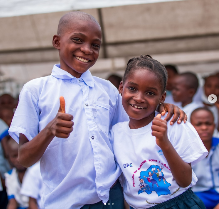
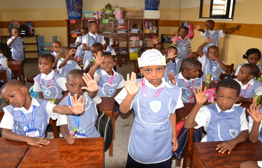
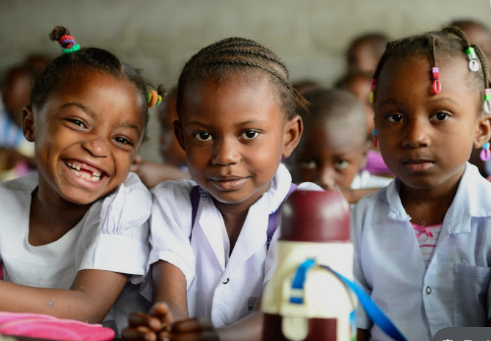
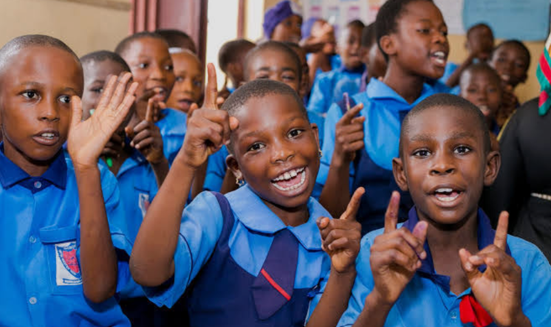
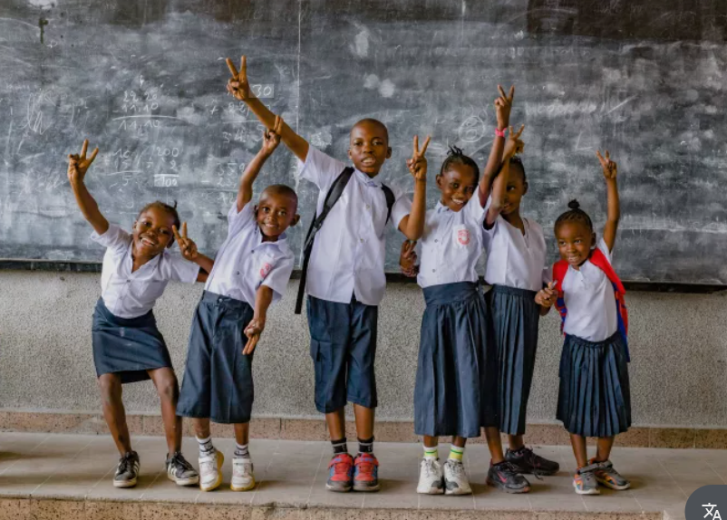

L’école joue un rôle fondamental dans la vie d’un individu et dans le développement d’une société. D’abord, elle permet d’acquérir des connaissances de base essentielles : lire, écrire, compter, mais aussi comprendre le monde qui nous entoure. Ces apprentissages sont indispensables pour devenir autonome et faire des choix éclairés dans la vie quotidienne. Ensuite, l’école est un lieu de socialisation. On y apprend à vivre avec les autres, à respecter des règles, à travailler en groupe et à développer des valeurs comme la tolérance, le respect et la solidarité. Ces compétences sociales sont tout aussi importantes que les savoirs académiques. L’école contribue également à révéler les talents et les passions de chacun. Elle offre un cadre où les élèves peuvent découvrir leurs intérêts, développer leurs capacités et construire progressivement leur projet de vie, que ce soit dans des domaines scientifiques, artistiques ou techniques. Enfin, l’éducation est un levier puissant de développement pour un pays. Une population instruite favorise l’innovation, la croissance économique et la stabilité sociale. Investir dans l’école, c’est investir dans l’avenir. En résumé, l’école ne sert pas seulement à apprendre des leçons : elle forme des citoyens responsables, capables de participer activement à la société.

un enfant qu'on éduque pas regresse, une société qu'on ne gouverne pas c'est détruite
CONSULTER
un enfant qu'on éduque pas regresse, une société qu'on ne gouverne pas c'est détruite
CONSULTERun enfant qu'on éduque pas regresse, une société qu'on ne gouverne pas c'est détruite
CONSULTERUn environnement chaleureux fondé sur les valeurs chrétiennes pour les premiers pas de votre enfant.
Un socle solide de connaissances dans la discipline et la bienveillance chrétienne.
Une formation complète préparant à l'Exétat et aux études supérieures.
Offrir une éducation de qualité qui forme des élèves compétents, responsables et capables de contribuer positivement à la société.
Nous promouvons le respect, la discipline, l’excellence, la solidarité et l’intégrité dans tout notre enseignement.
Développer les compétences intellectuelles et sociales des élèves, encourager leur créativité et les préparer aux défis du futur.

Préfet des études

Directeur des études

Directeur de discipline

Directrice du primaire




